Every single song receives its own unique 1080p anime artwork, 2-row couplets, dynamic intro blur timing, and subtle 35mm lofi grain.
1080p Real live-action camera footage with forward + reverse ping-pong loop (100% zero jump-cut seam), cinematic contrast boost (eq=contrast=1.22), deep rainforest blacks, and 60-second seamless binaural tin roof rain & rolling thunder loop.
A wide-angle panoramic landscape view of a cozy cabin nestled deep in a misty tropical rainforest with rain pouring across the canopy and metal roof. Graded into a soothing midnight blue palette for dark bedrooms, insomnia relief, and deep focus. 100% Commercial live camera footage + clean binaural rain and thunder audio. Zero Content ID claims, 100% safe to monetize on YouTube.
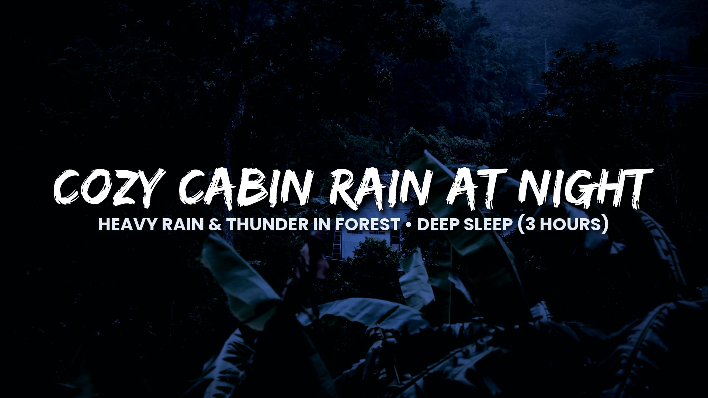
Font: Edo SZ | Fill: White | Shadow: Multi-layer Gaussian blur | Wide Nature Vista | Download JPG
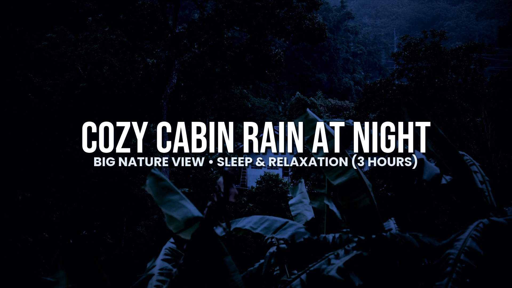
Font: Bebas Neue | Fill: White | Shadow: Sharp 3D Solid Cut-Out | Dark Mode Pop | Download JPG
VIDEO TITLE:
Rain on Cozy Cabin in Murky Rainforest at Night • Heavy Rain & Thunder Sounds for Sleep (3 Hours)
DESCRIPTION:
Fall asleep in minutes and cure insomnia with tranquil heavy rain falling on a secluded cozy cabin tucked deep inside a foggy mountain rainforest at night. Wide panoramic nature vista graded in deep midnight blue to prevent screen glare, accompanied by gentle binaural roof rain and distant rolling thunder.
Perfect for: Deep sleep, studying, insomnia relief, anxiety reduction, meditation, and relaxing background noise.
⏱️ TIMESTAMPS:
00:00:00 - Rainforest Rain at Secluded Cabin
01:00:00 - Deep Sleep & Distant Rolling Thunder
02:00:00 - Midnight Canopy Downpour
02:59:00 - Waking Up Refreshed
🎧 Headphones recommended for full binaural immersion.
✨ 100% Commercial Licensed live-action footage & original audio design.
SEARCH TAGS:
rain on cabin, rain sounds for sleep, cozy cabin rain, heavy rain at night, rain on tin roof, rain sounds, sleep sounds, insomnia relief, rain in rainforest, 3 hours rain, ambient rain, white noise for sleeping, study sounds, deep sleep rain, rain and thunder sounds, cabin ambience
Here are 12 Real Nature Rain Views in their natural daylight and misty overcast lighting (no heavy dark night grade, no fireflies). You can see the vibrant green pine trees, alpine lakes with rain ripples, ancient mossy woods, rainforest canopies, and jungle foliage. Choose the ID you want for our next video!
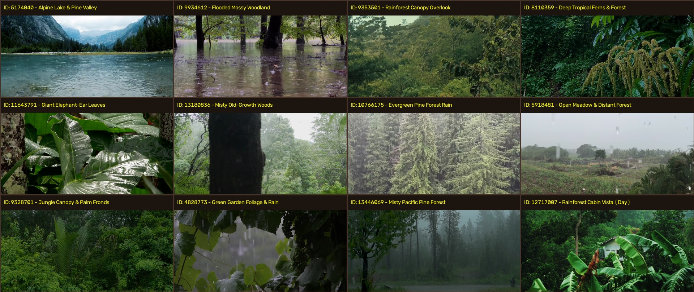
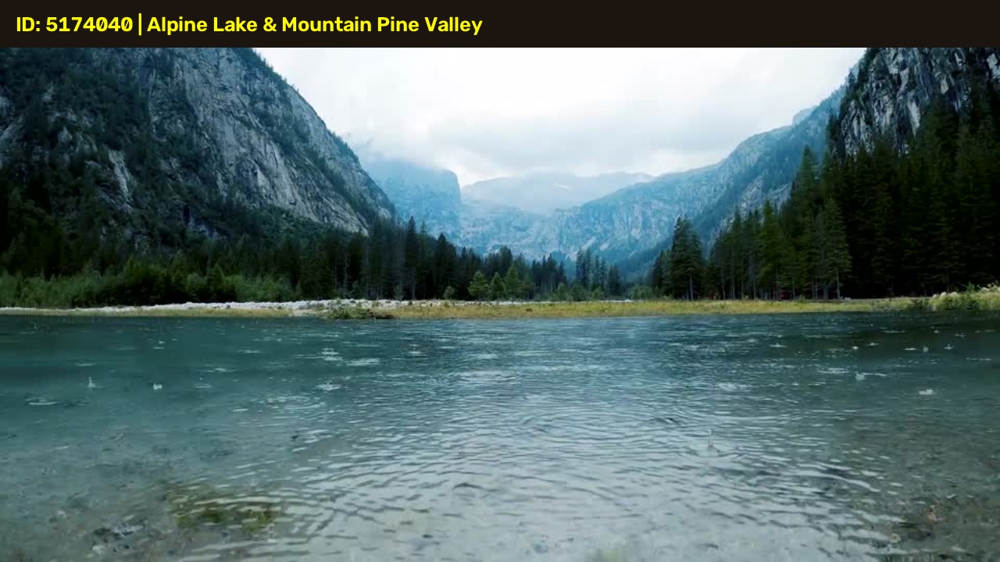
• View: Vast turquoise mountain lake with thousands of gentle rain ripples, towering rocky alpine peaks, and lush pine valley.
• Lighting: Natural daytime mountain air, bright and crystal clear.
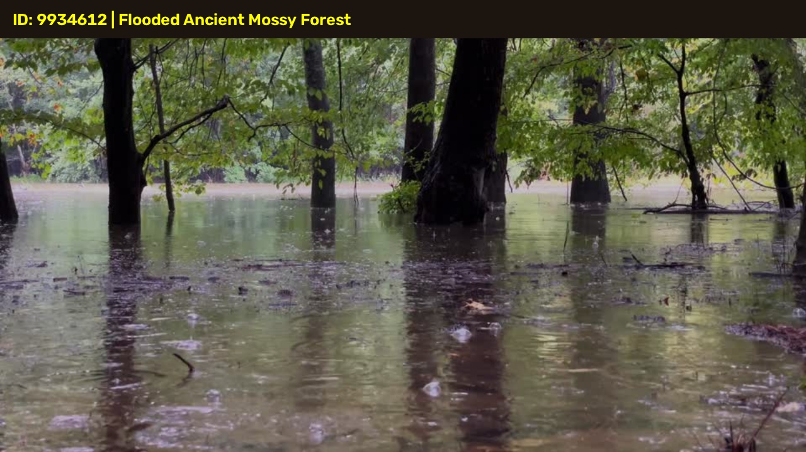
• View: Ancient mossy tree trunks reflected in a calm flooded woodland pool with gentle raindrops pattering onto the water surface.
• Lighting: Atmospheric overcast daylight woods.
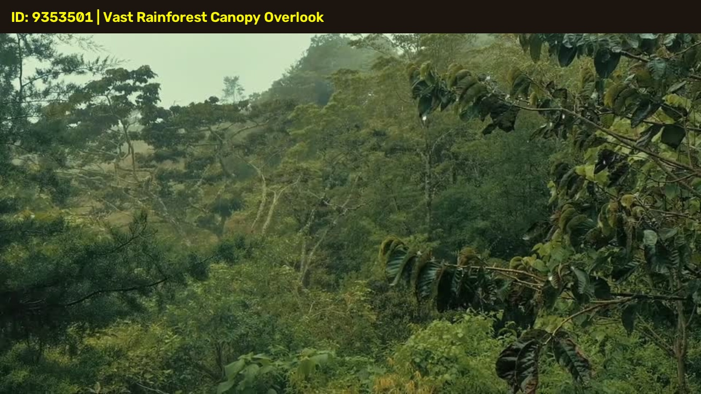
• View: High mountain ridge overlooking an endless ocean of rolling lush green tropical rainforest trees with drifting mist.
• Lighting: Bright tropical rainforest mountain daylight.
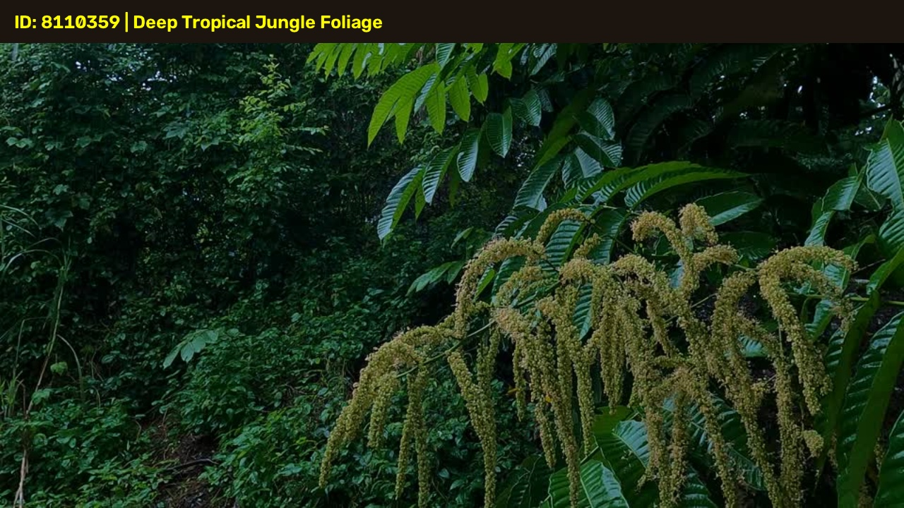
• View: Vibrant emerald green jungle foliage, drooping tropical ferns, and wild blossoms in steady rain.
• Lighting: Rich natural green daylight rainforest.
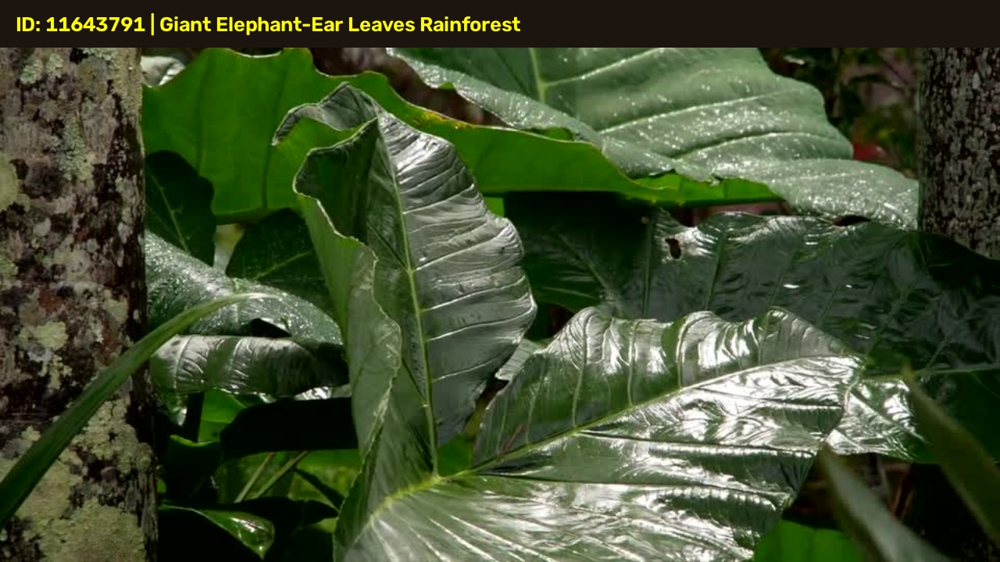
• View: Glistening giant elephant-ear leaves with clean rainwater streams trickling off glossy green surfaces.
• Lighting: Fresh morning rain daylight.
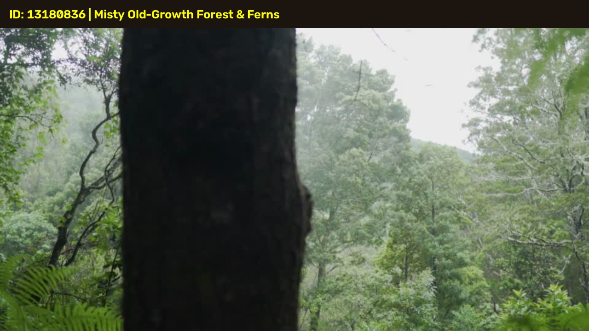
• View: Ancient thick tree trunk and fresh green forest canopy with gentle misty rain falling through the branches.
• Lighting: Natural overcast misty forest.
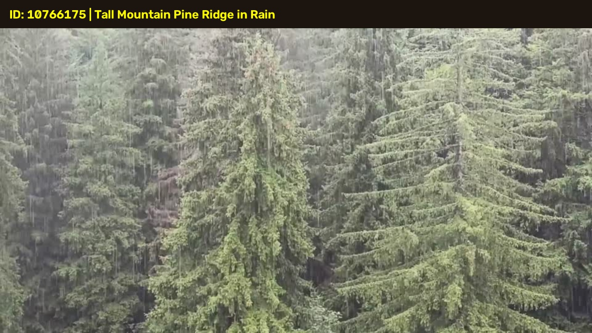
• View: Towering evergreen mountain pine trees shrouded in drifting white fog with heavy rain streaming through needles.
• Lighting: Mountain fog & natural daylight.
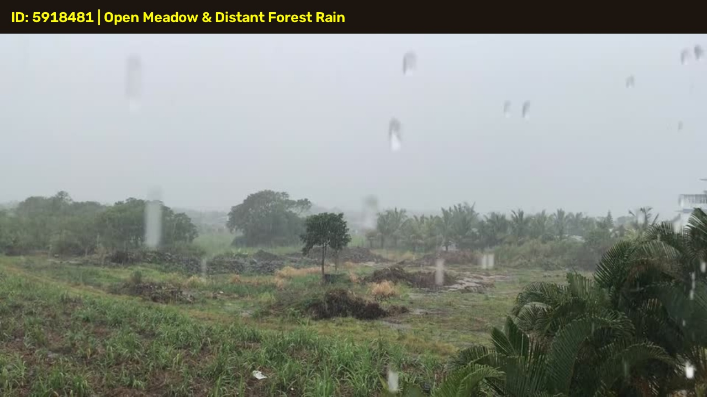
• View: Expansive open green valley and rural field in heavy summer rainfall with distant tree horizon.
• Lighting: Bright open daylight rain.
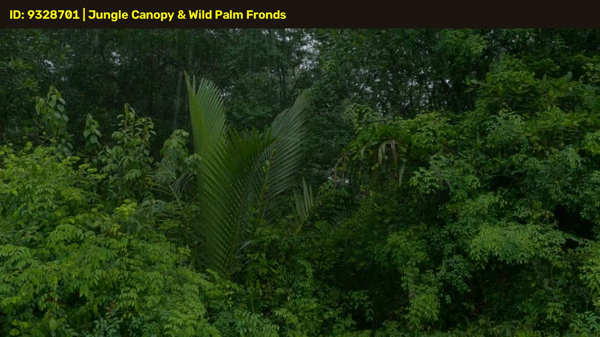
• View: Tropical wild palm fronds and lush rainforest trees swaying gently under monsoon rain.
• Lighting: Vibrant green jungle daylight.
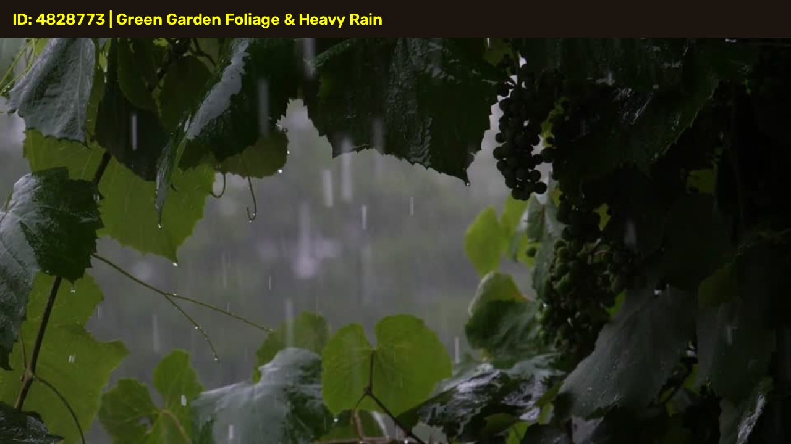
• View: Dense hanging grape vine leaves and lush garden foliage with heavy raindrops falling directly onto leaves.
• Lighting: Bright fresh garden daylight.
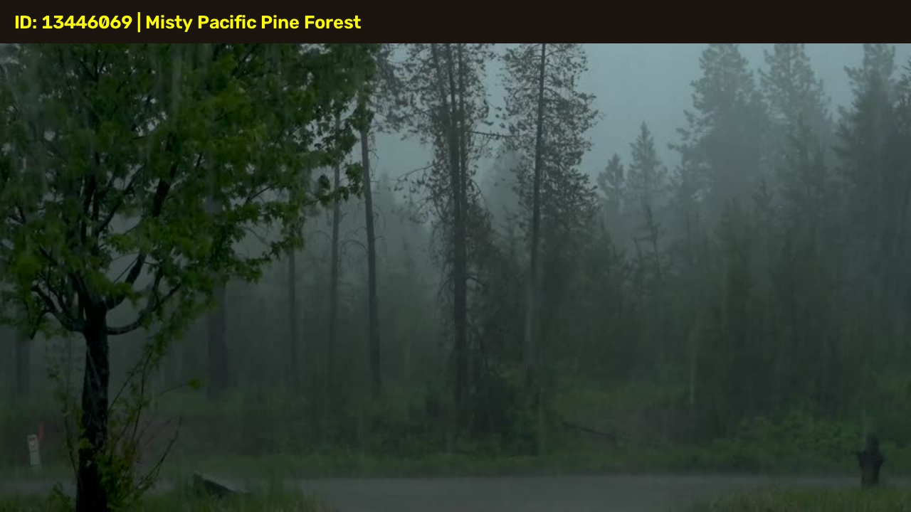
• View: Mountain fog and drifting mist rolling through a dense evergreen pine forest in gentle rain.
• Lighting: Atmospheric cool misty overcast.
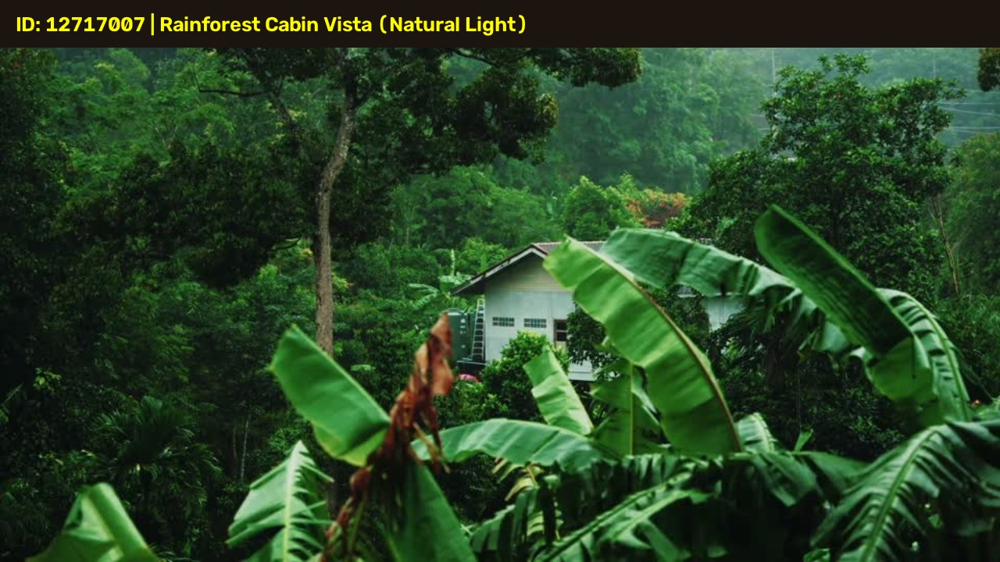
• View: The mountain cabin nestled among banana trees, seen in natural daylight (bright green foliage, no dark blue night filter).
• Lighting: Natural daytime rainforest.